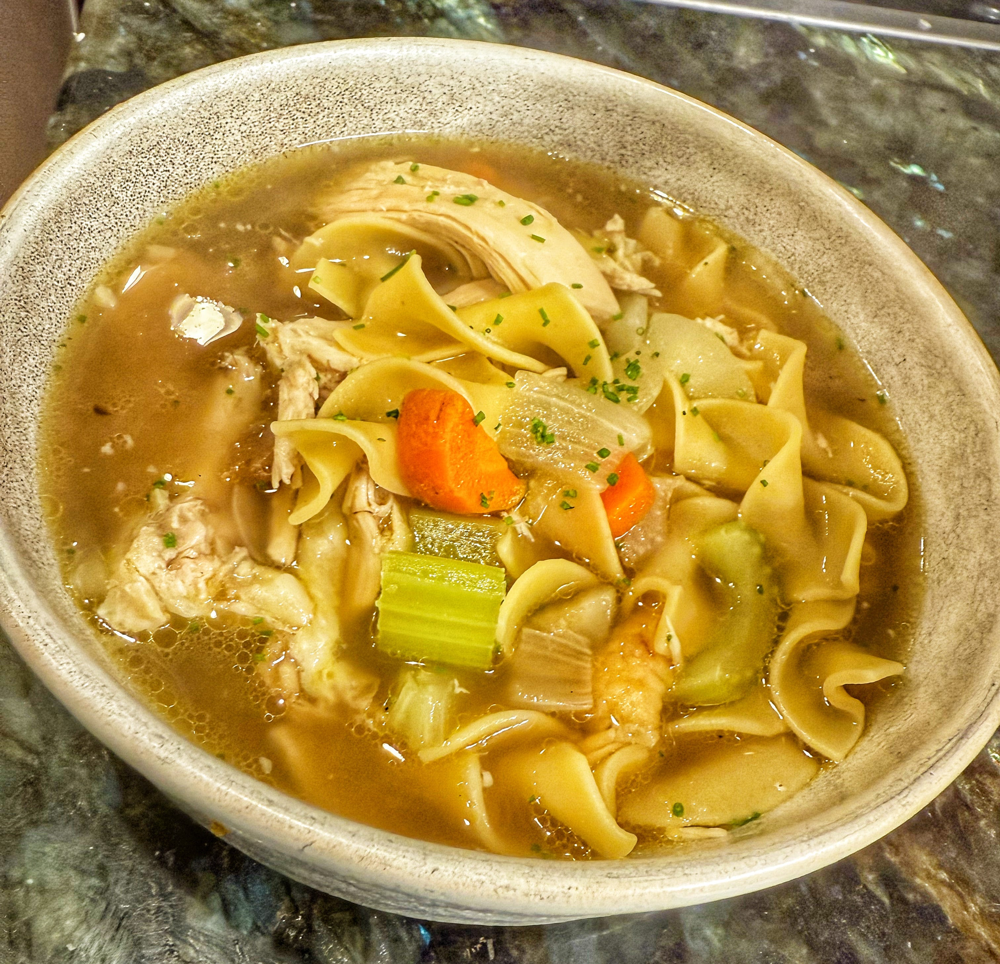

Fast, Fresh Chicken Noodle Soup for Cold and Flu Season
Fast-Fresh-Chicken-Noodle-Soup • Serves 4–6 • Soup
This version of chicken noodle soup leans into why the classic “sick food” works in the first place: warm, hydrating broth; protein-rich chicken; and a stock boosted with fresh ginger and whole black peppercorns for circulation and gentle heat. It’s built to be practical on a weeknight but still feel like real care in a bowl.

Ingredients
For the fast stock
- 1 whole roasted chicken, meat removed and bones reserved
- Vegetable scraps from preparing the soup vegetables (carrot peels and ends, onion skins and ends, celery ends)
- 4 cloves garlic, smashed
- 1–2 inches fresh ginger, sliced
- 1½–2 tsp whole black peppercorns
- 8–10 cups water
- Optional: high-quality low-sodium organic or free-range broth (in place of or in addition to the water)
For the soup
- Shredded meat from the roasted chicken
- 2 tbsp olive oil or reserved chicken fat
- 1 large onion, diced into uniform pieces
- 3 carrots, sliced evenly
- 2 celery stalks, sliced evenly
- 5 cloves garlic, minced
- 6–8 cups strained stock or prepared broth (more if you like it very brothy)
- ½–1 tsp soy sauce
- ½ tsp Worcestershire sauce
- 6–8 oz egg noodles
- Kosher salt, to taste
- Fresh cracked black pepper, to finish
Method
1. Prep the vegetables and save the scraps
- Cut the onions, carrots, and celery cleanly and uniformly so they cook evenly.
- Save all the vegetable scraps (carrot peels and ends, onion skins and ends, celery ends) for the stock.
2. Make the fast stock
- Place the chicken bones, vegetable scraps, smashed garlic, sliced ginger, and whole black peppercorns into a large pot.
- Cover with water or prepared broth.
- Bring to a gentle simmer and cook for about 30 minutes.
- Strain and discard the solids. Set the clear broth aside.
3. Build the soup base
- In a clean pot, heat the olive oil or chicken fat over medium heat.
- Add the onions and carrots with a pinch of salt and cook until lightly caramelized.
- Add the celery and cook for 2–3 minutes more.
- Add the minced garlic and cook briefly until fragrant.
4. Finish the soup
- Pour in the strained stock.
- Add the shredded chicken, soy sauce, and Worcestershire sauce.
- Bring to a gentle simmer and add the egg noodles.
- Cook until the noodles are just tender, 6–8 minutes depending on thickness.
- Taste and adjust salt at the end.
- Finish with freshly cracked black pepper (and hot sauce if you like).
Why this works: Warm broth supports hydration and electrolyte balance, chicken provides protein and amino acids, ginger reduces inflammation and supports digestion, and black pepper improves circulation and nutrient absorption. It’s functional comfort food with a short simmer instead of an all-day project.